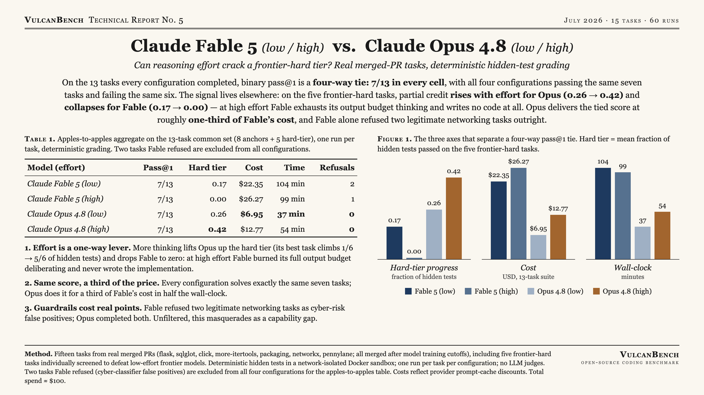
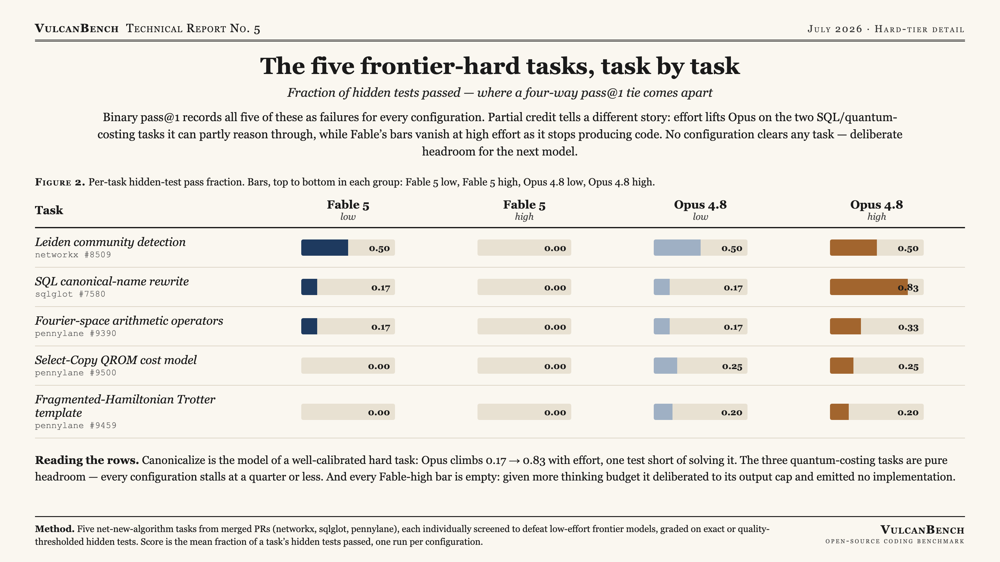

Five net-new-algorithm tasks were added to the suite specifically to defeat low-effort frontier models. On the 13 tasks every configuration completed, binary pass@1 is a four-way tie: 7/13 in every cell — all four configurations pass the same seven tasks and fail the same six. The signal has moved off the binary metric. On the five frontier-hard tasks, partial credit rises with reasoning effort for Opus (0.26 → 0.42) and collapses for Fable (0.17 → 0.00): at high effort Fable spends its entire output budget deliberating and writes no code. Opus delivers the tied score at roughly one-third of Fable’s cost, and Fable alone refused two legitimate networking tasks as safety false-positives.

| Model (effort) | Pass@1 | Hard tier | Cost | Time | Refusals |
|---|---|---|---|---|---|
| Claude Fable 5 (low) | 7/13 | 0.17 | $22.35 | 104 min | 2 |
| Claude Fable 5 (high) | 7/13 | 0.00 | $26.27 | 99 min | 1 |
| Claude Opus 4.8 (low) | 7/13 | 0.26 | $6.95 | 37 min | 0 |
| Claude Opus 4.8 (high) | 7/13 | 0.42 | $12.77 | 54 min | 0 |
Aggregate on the 13-task common set (8 anchors + 5 hard-tier). Hard tier is the mean fraction of hidden tests passed across the five frontier-hard tasks. The two tasks Fable refused are excluded from all four configurations so the comparison is like-for-like.
Frontier pass rates have converged to a literal tie. All four configurations score 7/13, passing the same seven tasks and failing the same six. An eval reporting only binary pass@1 would call these configurations identical — which is precisely why a harder tier and a partial-credit metric are needed.
Reasoning effort is a one-way lever. More thinking compounds for Opus (hard-tier score 0.26 → 0.42; its best task climbs from 1/6 to 5/6 of hidden tests) and backfires for Fable (0.17 → 0.00). At high effort Fable exhausted its output budget deliberating and produced no implementation on every hard task. "More effort" is a model-specific behavior, not a universal upgrade.
At equal accuracy, the efficiency gap is ~3x. Opus matches Fable's score at a third of the cost ($6.95–$12.77 vs $22.35–$26.27) and about half the wall-clock. When correctness ties, cost and latency are the benchmark.
Safety guardrails masquerade as capability loss. Fable refused two legitimate tasks — an HTTP-upgrade handler and an io.Tee bug — as cyber-risk false positives; Opus refused none. On raw scores that reads as "Fable failed two tasks." Refusal-adjusted scoring should be table stakes for systems and networking code.
Models follow training priors over explicit instructions. On the Leiden task the objective function is spelled out in the prompt, formula included, with a literal "this is CPM, not modularity" warning. The model implemented modularity anyway, scoring far below threshold. Tasks graded against a specified-but-unusual convention expose an instruction-versus-prior failure mode standard benchmarks never touch.

Fifteen tasks from real merged pull requests (flask, sqlglot, click, more-itertools, packaging, networkx, pennylane; Python and Go), all merged after model training cutoffs, graded by deterministic hidden tests in a network-isolated Docker sandbox. One run per task per configuration; no LLM judges. Five of the fifteen are net-new-algorithm tasks individually screened to defeat low-effort frontier models: a native Leiden implementation, a SQL canonical-name rewrite, and three quantum resource-estimation templates.
The hard tier was calibrated after an initial run showed it graded partly on conventions a correct implementation could not derive. Grading was made fair-hard: the Leiden task moved from exact-partition matching to semantic quality thresholds plus the algorithm's connectivity guarantee, and the three quantum tasks gained worked acceptance examples at parameter points distinct from the hidden graded cases. Difficulty was preserved; unknowability was removed.
Two tasks Fable refused as cyber-classifier false positives are excluded from all four configurations in the apples-to-apples table so the comparison is like-for-like; the refusals are reported separately. Costs reflect each provider's automatic prompt-cache discount. Total spend for the run was approximately $100.
{kind=link}
{kind=link}